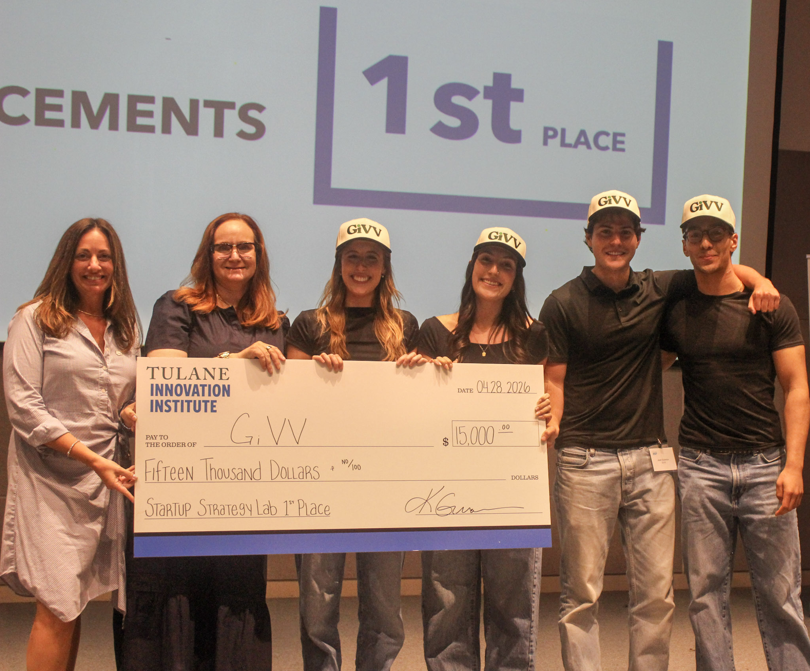

01 / Entrepreneurship · 2026–present
GiVV
Co-founded a social marketplace concept to connect Tulane students with New Orleans nonprofits. Fifteen-plus research interviews, a semester of building, and a first-place pitch earned our team $15,000.
Explore GiVV